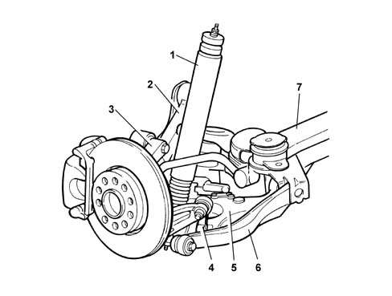
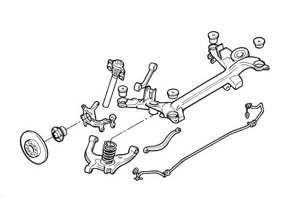
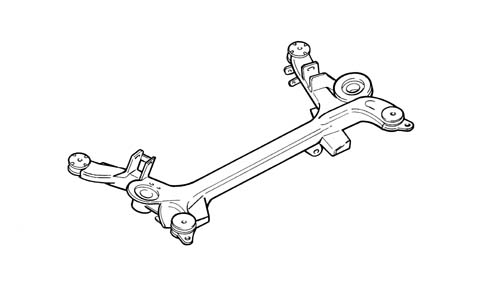
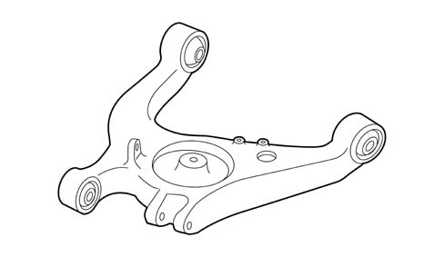
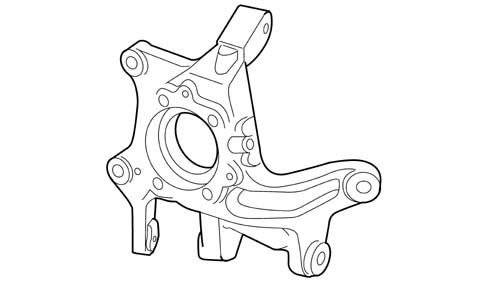
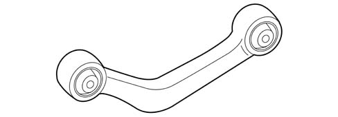

REAR SUSPENSION
- Path
- Descriptions > 44 SUSPENSION AND WHEELS > REAR SUSPENSION
- Kind
- system description
- Applies to
- all engines; all production periods
- Interactive page
- https://sloeber94.github.io/elrnDB-lThss/en/#/199156
Applies to: all engines; all production periods
SPECIFICATIONS
This is a multilink suspension improved and compacted for the rear suspension used on the Alfa Romeo 166 and the first example of modular suspension.
The diagram below illustrates how the suspension closes completely on the crossmember which forms a connection with the bodyshell

- 3 - Stub axle
- 1 - Shock absorber
- 4 - Vertical connecting rod
- 2 - Camber control rod
- 5 - Track control arm
- 6 - Toe in control rod
- 7 - Crossmember
The construction design consists of:
- Interface crossmember: connected by means of four flexible bushes to the bodyshell, supporting the lower arm, the camber control rod, the toe in control rod and the anti-roll bar in addition to supporting the spring.
- Track control arm: this guides the movements of the vertical connecting rod and the stub axle and is connected to the crossmember by means of flexible bushes and supports the spring.
- Stub axle: this element supports the wheel through which the forces exchanged between the wheel and the ground pass.
- Camber control rod: this is connected to the stub axle by flexible bushes and guides the camber movement. Its length and position determine the correct camber value in all conditions.
- Toe in control rod: it guides the toe in movement of the stub axle to which it is connected by means of a flexible bush and can be adjusted to the correct setting value.
- Vertical connecting rod: it acts as an internal connecting element between the stub axle and the track control arm and its main function is to regulate the changes in track whilst driving over an obstacle.
- Flexible bushes: these are designed to be flexible to guarantee the stable and comfortable behaviour of the rear axle.
- Flexible and damping elements: the spring and end of travel buffer act on the track control arm whilst the anti-roll bar and (sky hook type) shock absorber act directly on the stub axle.
Diagram showing the fitting of the suspension

Technical notes
The hinged stub axle geometry combines the relative design simplicit of quadrilateral suspension with the more sophisticated performance of multilink suspension.
The adoption of an internal joint between the stub axle and the track control arm created by the adoption of a vertical connecting rod is a special feature.
This, together with the complete connection of the lower arm to the crossmember, results in a more compact structure which does not require mounting points on the bodyshell.
From the point of view of performance all of this is equivalent to the introduction of a degree of internal freedom for the suspension which results in satisfying the demanding requirements of driveability whilst not compromising on the highest levels of comfort.
COMPOSITION
From a construction point of view the suspension is connected to the bodyshell via the interface crossmember which, by means of flexible connection bushes, also carries out the function of filtering road uneveness.
Each component has been designed to give the best compromise between lightness, size and resistance to the operating stresses of the suspension. This approach has made it possible, through the use of specific technology, to use aluminium for the majority of the suspension components.
Crossmember
The crossmember is made from mechanically formed steel tubes in order to guarantee structural strength without adversely affecting the requirements of lightness. In effect, the main forces exchanged between the wheel and the road, in addition to the loading of the spring, are at the crossmember.
Steel tube crossmember

Lower arm
The lower arm is made from low pressure fused aluminium alloy.
Die-cast aluminium track control arm

The use of an inner core has made it possible to produce the box structure shape allowing an optimum strength/weight ratio and, at the same time, guaranteeing appropriate resistance to the stresses to which this component is subjected.
Steering knuckle
The stub axle acts as a collector/sorter of the forces acting on the suspension. It is made from aluminium alloy using squeeze casting technology which is ideal for guaranteeing the right compromise between strength, lightness and shape suitable for the geometric requirements.
Squeeze cast aluminium stubl axle

Camber control rod
The camber control rod withstands the forces transmitted to the upper part fo the suspension. Being made from aluminium alloy makes it possible to achieve high strength specifications in spite of the arch shape required to enable it to be housed under the floor of the vehicle.
Forged aluminium camber control rod

Vertical connecting rod
The vertical connecting rod is made from forged aluminium alloy and is the element which joins the stub axle and the lower arm. It acts as a strut/rod through the effect of the longitudinal and braking forces at the wheel.
Forged aluminium vertical connecting rod
In order to assist the flexible retraction effect of the wheel centre the connection with the arm and the stub axle is guaranteed by suitably strong flexible bushes.